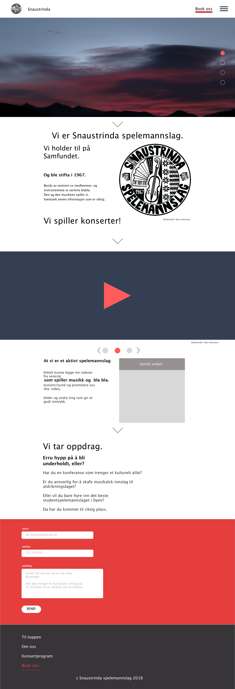
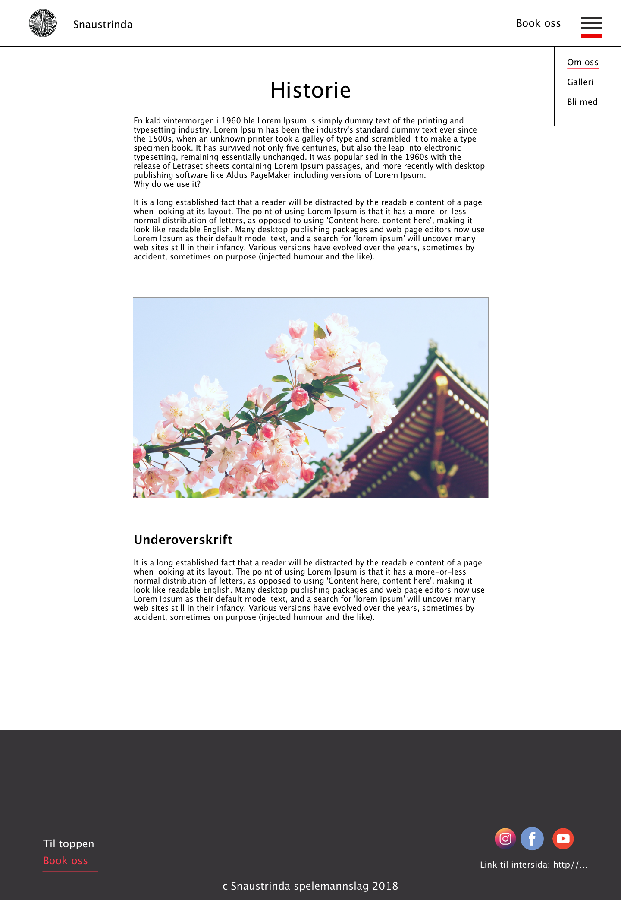
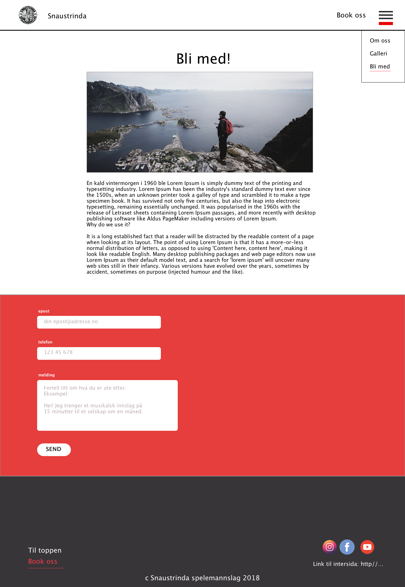
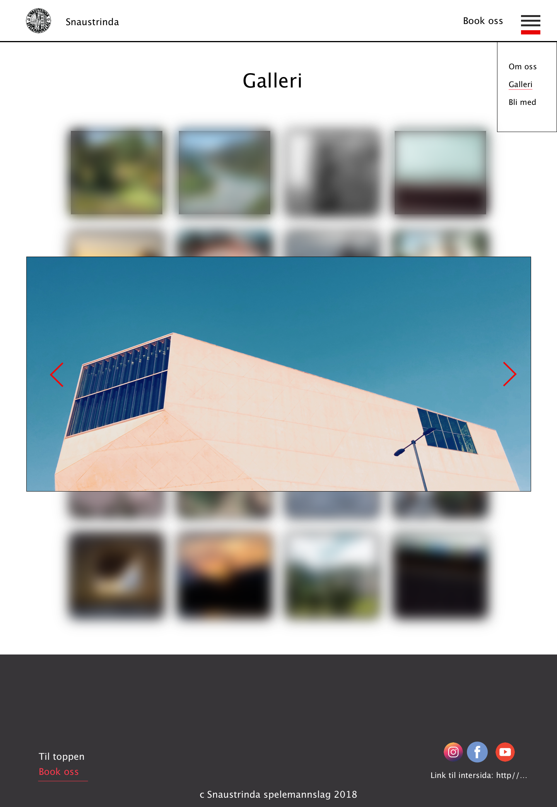

Gruppe 7 - P2
Med: Ulrik Kristoffersen, Thomas Immanuel, Simon Nymo, Marit Aasen og Kristian Fougner.
Publisert: 8.10.19
Hvem, hva hvorfor
Kunden vår er Snaustrinda Spelemannslag, representert ved Øystein Krogstie (sekretær og dataansvarlig).
Målet med siden er å presentere hvem Snaustrinda er og hva de driver med. Hovedsaklig for de som er interessert i å booke, men også for de som vil bli medlemmer. Det er også viktig at de lett skal kunne komme i kontakt om dette.
Navigasjon
Nettsiden består av en hovedside som skal scrolle nedover med det mest relevante innholdet. Her skal vi ha en kjapp beskrivelse, bilder man kan bla gjennom, en video, musikk og nederst en søknad for booking.
Det skal være 3 ekstra sider med mer spesifikt innhold. Alle websidene skal linke til hverandre, slik at man kan komme dit man vil på nettsiden fra alle websidene.
På alle websidene skal det være en link som fører til bookingen på hjemmesiden. Denne er ikke tegnet inn på kartet under siden den bare skal automatisk scrolle ned til bookingen. Hvis man er på en annen side en hjemmesiden vil man først bli dirigert til hjemmesiden, for så å bli scrollet ned.
I tillegg skal vi ha en link til internsiden til Snaustrinda som skal være på footeren på alle websidene. Denne linken er heller ikke tenget inn siden den ikke linker til vår nettside.

Nettsidens utseende
Hjemmesiden skal ha en navigasjonsbar plassert øverst. Dette er for å gjøre det enkelt for brukeren å se hva som finnes på siden. Selve navigasjonsbaren skal bestå av spillemannslagets egen logo (som linker til hovedsiden), samt link til bookingside og en meny som inneholder resten av undersidene. Linker i navigasjonsbaren skal være røde (#FF394D) når brukeren hovrer over dem. Da både innholdet og navgasjonsbarens bakgrunnsfarge er lik (hvit), vil vi bruke ei linje til å skille mellom dem.
Nettsiden skal altså ha hvit (#FFFFFF) bakgrunnsfarge og presentere innholdet med svart (#000000) tekst. Tekstens font skal være Lucida Grande (med liknende fonter som back-up). Dette etter kundens ønske. Skriften skal ha størrelse ???.
Sidens bredde skal være 780 px. Noe mer om plassering av innhold???
Footeren skal ha svart bakgrunnsfarge med hvit tekst. Til venstre finner man linker til booking og toppen av siden og til høyre ligger linker som leder bort fra vår side, nemlig link til internsiden, samt sosiale medier (Facebook, Youtube og Instagram). Hva kalles teksten i midten der???
Innhold
Hovedside
Hovedsiden skal være delt i fire deler. Hver av dem skal kunne nås fra den forrige ved å trykke på en pil som ligger under den aktuelle delens innhold eller ved scrolling. Grunnen til at hovedsiden er strukturert slik er for å gi potensielle kunder en kort og konsis, men samtidig apetittvekkende presentasjon av spillemannslaget. Dette skal forhåpentligvis friste dem til å booke Snaustrinda, noe de også får mulighet til nederst på siden.
-
Øverst på hovedsiden skal vi ha et bilde-slideshow (ca. 3 bilder). Bildene skal være like brede som
innholdet
på siden. I bildenes "boks" skal det være prikker som viser hvor mange bilder det er og hvilket som vises
akkurat nå.
Skal brukeren kunne bla i bildene????
-
Neste del skal være en kort tekst om spillemannslaget - hvem de er og hva de gjør. For mer utfyllende informasjon så kan brukeren gå til egen underside (ved navn???). Ved å ha en kort og lett fordøyelig tekst på hovedsiden så slipper kunden å "slite seg ut" her. Dette skal være en apetittvekker, ikke en hovedrett!
-
informasjonen om Snaustrinda skal det være en del der man kan se og høre dem spille. Denne delen skal altså inneholde en (???) video av tidligere opptreden, samt en avspiller for musikk (Spotify embedded???). Videoavspilleren skal ligge øverst, oppta ca. 3/4 av høyden (???) og være like bred som siden. Musikkavspilleren skal ligge nederst, ute til høyre. Til venstre for denne er det tekst som inviterer kunden til å se/høre spillemannslaget.
- Nederst på siden, sammen med footeren, skal det ligge et kontaktskjema. Håpet er at kunden nå er overbevist om at Snaustrinda verdens beste spillemannslag og at de ikke kan vente med å ta kontakt.
Om oss
Her finner kunden utfyllende informasjon om hvem Snaustrinda er og spillemannslagets historie. For å gjøre teksten mer levende skal det også veves inn bilder som underbygger det som fortelles.
Bli med!
Hvis noen har sett Snaustrinda opptre og tenkt for seg selv at de gjerne vil bli med på morroa, så er dette siden for dem. Her kan de lese om hva som kreves for å bli medlem og de kan ta kontakt via et kontaktskjema. Selve kontaktskjemaet er det samme som brukes for bookingen. Dette for å gi nettisden et helhetlig inntrykk.
Galleri
Denne siden skal inneholde et galleri. Bildene skal vises i et rutenett med lav oppløsning. Når man trykker på et bilde, forstørres det med bedre oppløsning og bakgrunnen blir uskarp. Deretter kan man bla videre eller gå tilbake til den opprinnelige visningen.
JavaScript
Siden skal ha en JavaScript-funksjon som kaller navigasjonsbaren og footeren på hver side. På forsiden skal vi ha et bilde-slideshow som blar gjennom bildene, og indikerer hvilket bilde som vises. Bookingen skal gjøres via et kontaktskjema som skal valideres med JavaScript. Mellom hver del av hovedsiden skal det være en pil som scroller til neste del når man trykker den. I galleriet skal det være en funksjon som forstørrer det bildet man trykker på, og lar deg bla mellom dem. Vi tar ansvar for en funksjon hver, men hjelper hverandre siden det er sannsynlig at arbeidsmengden er forskjellig.
Plan
Vi har planlagt å organisere arbeidet slik:
| Fil(er) | Beskrivelse | Hovedansvarlig | Frist |
|---|---|---|---|
| hovedside.html | Nettsidens hovedside | Thomas | 20. oktober |
| header.html | Felles header for alle sider |
Marit | 20. oktober |
| footer.html | Felles footer for alle sider |
Marit | 20. oktober | om_oss.html | Info om Snaustrinda og historie med bilder |
Ulrik | 20. oktober |
| bli_med.html | Side for de som vil bli medlemmer av Snaustrinda |
Simon | 20. oktober |
| galleri.html | Bildegalleri | Kristian | 20. oktober |
| style.css | Felles CSS-fil for alle sider | Alle | 20. oktober |
| Bilder (alle) | Bilder av Snaustrinda | Thomas | 13. oktober |
| Video (alle) | Video av Snaustrinda | Thomas | 13. oktober |
| pil.js | Hovedsidens pil (se over) | Urlik | 27. oktober |
| galleri.js | Visningsfunksjon i galleri | Kristian | 27. oktober |
| slideshow.js | Slideshow på hovedside (bilder) | Thomas | 27. oktober |
| booking.js | Validering av kontaktinfo og knappefunksjoner |
Simon | 27. oktober |
| navbar.js | Navigasjonsbar | Marit | 27. oktober |
Filstruktur
- hovedside.html
- om_oss.html
- bli_med.html
- galleri.html
- bilder/
- hovedside.html
- om_oss.html
- bli_med.html
- galleri.html
- bilder/
- galleri/
- highres/
- bilde.jpg
- bilde2.jpg
- ...
- lowres/
- bilde.jpg
- bilde2.jpg
- ...
- highres/
- logo.png
- slideshow1.jpg
- slideshow2.jpg
- slideshow3.jpg
- galleri/
- video/
- video.mp4
- script/
- navbar.js
- slideshow.js
- booking.js
- pil.js
- galleri.js
- style.css
- video/
- video.mp4
- musikk/
- sang.mp3
- sang2.mp3
- ...
- script/
- navbar.js?
- footer.js?
- slideshow.js
- booking.js
- pil.js
- galleri.js
- style.css